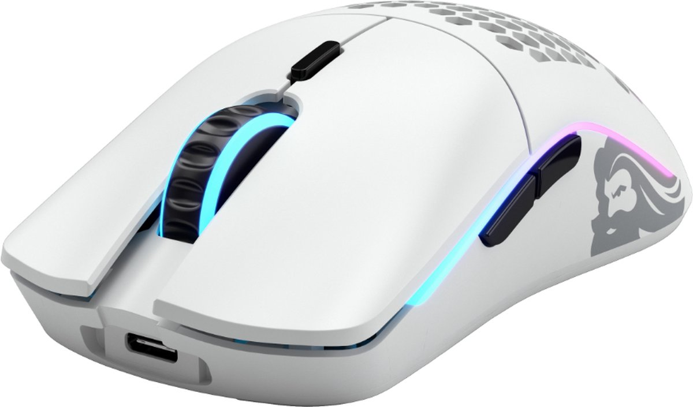

€26,95
Onmogelijk lichtgewicht, tweehandige gamingmuis met lag-free connectiviteit en bliksemsnelle prestaties, verpakt in een kleiner frame met de Glorious BAMF-sensor.
Onmogelijk lichtgewicht, tweehandige gamingmuis met lag-free connectiviteit en bliksemsnelle prestaties, verpakt in een kleiner frame met de Glorious BAMF-sensor.
Vordeel:
Tactile, goed voelende clicks.
Goed werkende software, mits de update functie
Goed geprijsd voor een lightweight wireless mouse.
Uitzondelijke gewicht vergelijken andere muizen.
Nadeel:
Meegeleverde kabel is slechte kwaliteit
Scrollwiel voelt slecht en piept bij scrollen.
Slechte batterijgebruik (24u inplaats van het aangegeven 71u)
Onmogelijk lichtgewicht, tweehandige gamingmuis met lag-free connectiviteit en bliksemsnelle prestaties, verpakt in een kleiner frame met de Glorious BAMF-sensor.
Merk: Glorious PC Gaming Race
Kleur: Wit
Aansluitingstechnologie: Radiofrequentie
Speciale kenmerken: Draadloos
Bewegingsdetectietechnologie: Optisch
Aantal knoppen: 6
Handoriëntatie: Tweehandig
Modelnaam: Model O-
Aanbevolen toepassingen voor product: Gaming
Compatibele apparaten: Console de jeu
Ben je op zoek naar de ultieme game-ervaring? Kijk dan niet verder! De DINTO® Gaming Muis is jouw perfecte gaming muis. Met een lichtgewicht design en een indrukwekkende 7200 DPI sensor, ben je verzekerd van snelle en nauwkeurige bewegingen...
De Model D Wireless elimineert frustrerende latency met zijn leidende draadloze connectiviteit. De state-of-the-art technologie die erin zit, voorkomt dubbelklikken en het niet-reageren, wat resulteert in een ongelooflijk soepele werking...
Dit is de Razer Viper Ultimate Draadloze Gaming Muis + Dock - 20000 DPI - Zwart. Niet alle draadloze muizen zijn gelijk. Maak kennis met de gamingmuis, aangedreven door een ultrasnelle draadloze technologie die is...